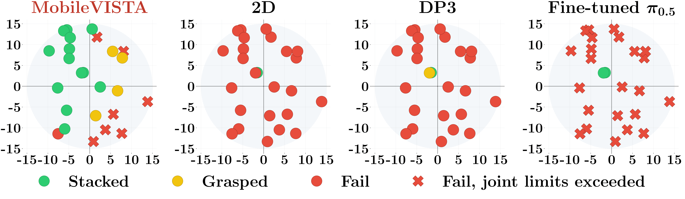
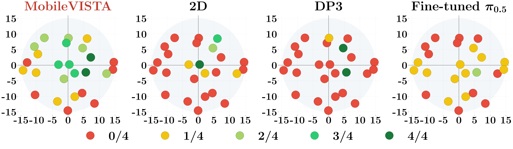
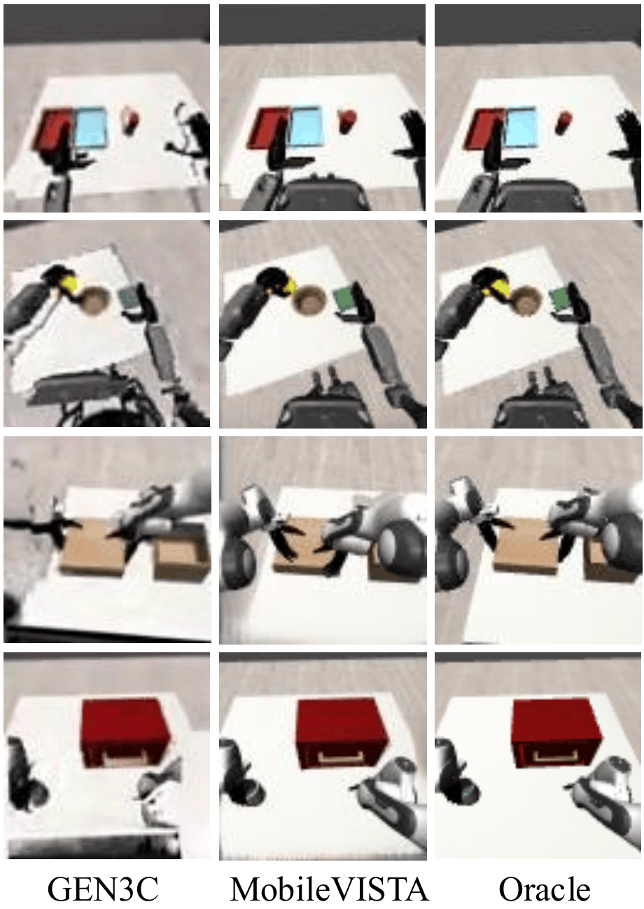
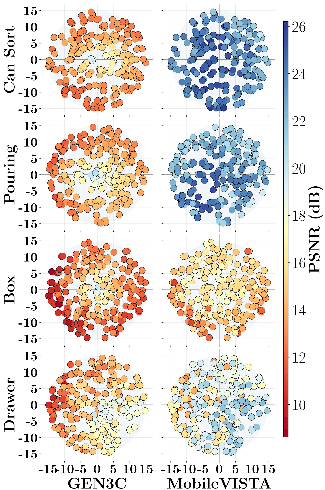
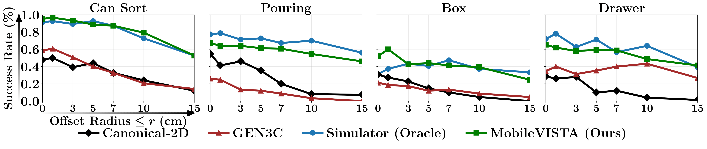
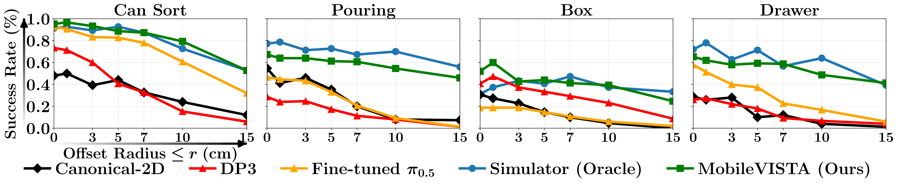

Paper ID 947
Mobile manipulators such as humanoid robots are increasingly deployed in dynamic, unstructured environments to perform dexterous manipulation tasks. However, end-to-end manipulation policies trained to imitate demonstration data collected from a single robot pose are brittle: even centimeter-scale deviations in robot pose at deployment can drive egocentric observations and end-effector trajectories out of the training distribution, leading to sharp drops in performance. At the same time, collecting additional real-world data with diverse poses can be prohibitively expensive. We introduce MobileVISTA, a data generation framework that transforms demonstrations captured at canonical poses into diverse, pose-perturbed training data by jointly augmenting egocentric visual observations and retargeting actions to compensate for base pose changes. Policies trained on this augmented data learn to respond to previously out-of-distribution poses encountered at test time. To evaluate its effectiveness, we study MobileVISTA in both simulated manipulation tasks and on a real Galaxea R1 Pro mobile manipulator. Across domains, MobileVISTA improves robustness to unseen base perturbations, while requiring no additional real-world demonstration collection. These results highlight MobileVISTA as a practical step toward deploying mobile manipulation systems that can reliably chain navigation and manipulation skills.
MobileVISTA takes single-pose manipulation demonstrations and produces training data covering a wide range of base poses, without collecting additional demonstrations. For each augmented trajectory, we sample a base perturbation and jointly synthesize (1) a pose-shifted egocentric observation and (2) a retargeted action sequence consistent with that observation.
We synthesize new egocentric visual observations via geometry-based reprojection: segment the robot from the scene, lift the remaining RGB-D into a colored point cloud, reproject from the perturbed egocentric camera, inpaint disoccluded regions, and re-render the robot at its retargeted joint configuration. We retarget actions in end-effector space by applying the inverse base perturbation to each per-timestep end-effector goal, then solving inverse kinematics to recover joint commands that preserve the original end-effector trajectory.
A single source demonstration becomes many augmented variants, each capturing what the same task would look like and require if the robot had started from a different base pose. The center shows the original canonical trajectory; the surrounding variants show various translation and rotation offsets.
We evaluate MobileVISTA on a Galaxea R1 Pro humanoid against three baselines — Canonical-2D, DP3, and fine-tuned π0.5 — across 25 trials per policy at base offsets sampled uniformly within a 15cm disk. Each dot in the plots below represents one sampled offset (overhead view, cm), colored by outcome.

The robot grasps a vertically placed book and reorients it horizontally onto a stack inside a bookshelf. MobileVISTA succeeds across a wide range of offsets while all baselines collapse beyond the canonical pose. Click any dot to load the four corresponding rollout videos.

The robot sorts four laundry items into two bins by category: black socks into a grey bin, and a yellow towel and beige shorts into a green bin, and is notably challenging due to its long horizon and bimanual coordination of deformable objects. MobileVISTA gets partial or full success across most offsets, while baselines stall, knock objects in the scene, or fail bimanual handoffs. Click any dot to load rollout videos.
We compare MobileVISTA against GEN3C, a state-of-the-art learned novel view synthesis model. MobileVISTA produces higher-fidelity observations across all four tested tasks. Qualitatively, MobileVISTA preserves sharp object boundaries and consistent scene geometry, while GEN3C tends to blur edges and distort surfaces under larger viewpoint shifts.


Policies trained on MobileVISTA-synthesized data consistently outperform those trained on GEN3C data, with downstream performance tracking PSNR reconstruction quality.

We evaluate MobileVISTA across four simulated tasks on two embodiments: Can Sort and Pouring on a Fourier GR-1 humanoid, and Box and Drawer on a bimanual Franka. MobileVISTA consistently outperforms all baselines across tasks and perturbation magnitudes, maintaining high success rates even at 15cm offsets where baselines collapse to near zero.
